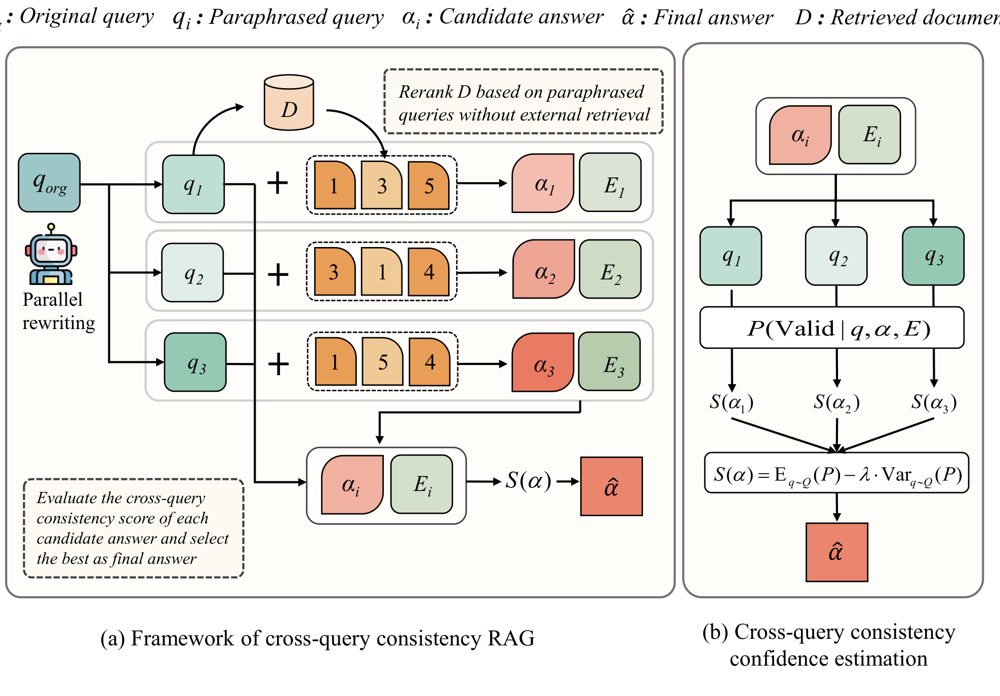
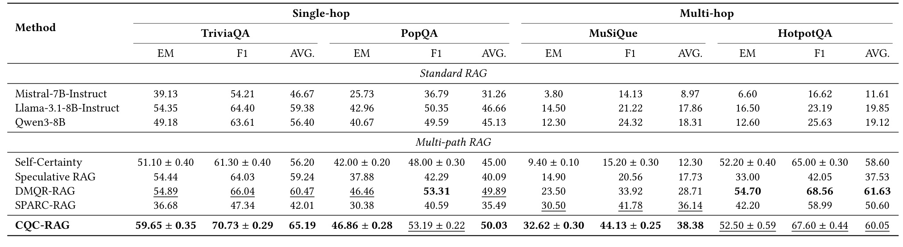
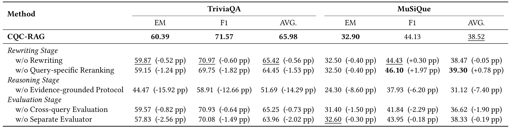
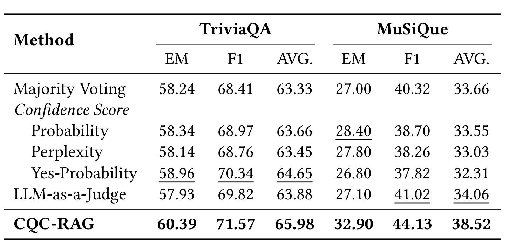
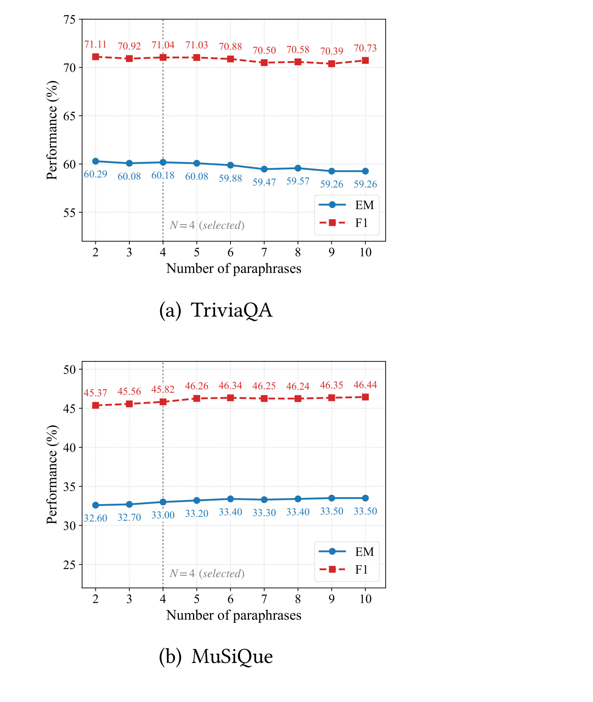
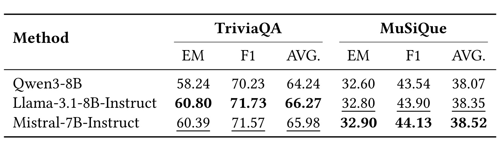
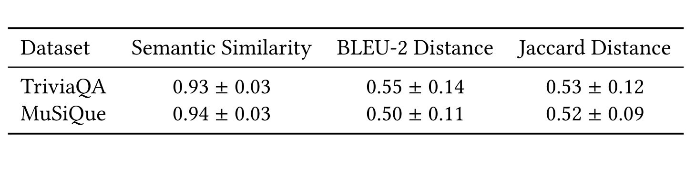
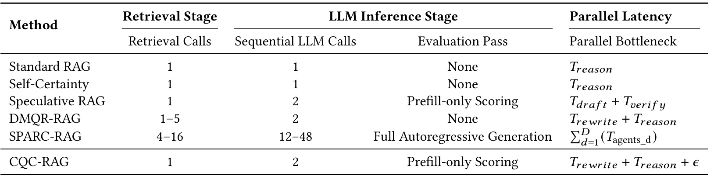

CQC-RAG: Robust Retrieval-Augmented Generation via Cross-Query Consistency
这篇论文讨论的是一个很具体但在 RAG 系统里反复出现的问题：同一个用户意图，只要换一种问法，检索器排序、进入上下文的证据和最终答案就可能明显变化；同时，检索进来的无关或误导性文档会让模型在看似有依据的上下文里生成幻觉。论文入口：arXiv:2606.13438。作者为 Yanjia Sun、Sifan Liu、Jie Shao，作者单位均标注为 University of Electronic Science and Technology of China，因此本文按任务分配目录命名为“多校-CQCRAG”，但正文事实以论文作者页为准。代码链接在论文摘要与附录中给出，已核验 GitHub 仓库可访问：https://github.com/FrancesPlus/CQC-RAG。CQC-RAG 的核心想法不是再扩大检索范围，而是提出 Cross-Query Consistency Hypothesis：正确答案应当在语义等价、句法不同的多个查询视角下保持较高且稳定的支持置信；由噪声证据诱发的错误答案则更依赖某个查询视角下的偶然排序，因此置信会波动。
1. 背景和问题
RAG 的基本承诺是把外部知识接入大模型，让模型不用完全依赖参数记忆来回答事实问题。标准流程看上去很直接：给定查询，检索器从语料库中找出相关文档，模型把文档作为上下文生成答案。真正落地时，薄弱环节并不只在生成模型本身，也在“查询如何诱导证据”这一步。论文开头引用了两个经验事实：一方面，语义等价的查询改写，例如主动语态与被动语态、同义词替换、从疑问句改成命令式，都可能带来平均 15% 到 20% 的检索性能下降，极端情况下超过 40%；另一方面，不相关输入会干扰模型推理，让模型在上下文里抓住表面相关但实际无效的片段，生成看似有出处的错误答案。这意味着 RAG 的鲁棒性不是单纯靠更大的 LLM 或更高的 top-k 就能解决的，因为检索排序本身已经把不同证据优先级注入到了推理过程。
已有多路径推理方法试图缓解这个问题。Self-Consistency 从同一个 query 出发，用温度采样生成多条 reasoning path，再用多数投票选择答案；Speculative RAG 先生成 draft，再用 verifier 选择；SPARC-RAG 用顺序-并行 agent 组织多轮推理；Self-Certainty、DistriVoting 等方法则使用模型置信度或分布形态来替代简单投票。这些方法都承认“单条生成路径不可靠”，但论文认为它们仍有两个共同局限。第一，diversity 主要来自 token-level decoding randomness。温度高会让答案语义漂移，温度低又会让多条路径高度重复；更重要的是，所有路径往往共享同一个原始查询和同一个检索视角，无法覆盖 query formulation 对文档排序的影响。第二，answer evaluation 仍大多发生在单一查询诱导的证据视图中。一个错误答案如果被某个 query-conditioned context 中的噪声证据反复强化，模型在这个视图下可能给出很高置信，多数投票或单视角置信度都未必能识别它。
CQC-RAG 的问题定义因此有一个细微但关键的转向：它不把 query rewriting 当作“多检索一些文档”的工具，而把 query rewriting 当作“构造多个语义等价的证据优先级视角”的工具。这个转向让论文与 DMQR-RAG 这类 multi-query expansion 方法区分开来。DMQR-RAG 的改写会覆盖 information-equivalent、information-expanded、information-reduced 等不同信息层级，并把多次检索结果合并成一个更大的文档池；CQC-RAG 则坚持所有改写查询必须回答同一个事实目标，且所有查询共享同一个初始 document pool。性能提升不能归因于“多看了新文档”，而应该来自在同一文档集合上用不同查询重新排序、生成多个证据视角，再检验答案是否跨视角稳定。
这个设定对开放域问答尤其有意义。TriviaQA、PopQA 这类单跳任务要求模型精确抽取实体；MuSiQue、HotpotQA 这类多跳任务还要求模型在干扰文档中串联多个证据。多跳任务里的错误经常不是完全凭空生成，而是由一个局部相关的证据片段带偏：模型抓住了桥接实体、标题或中间属性，却没有把所有约束满足到最后。若只从一个 query view 看，这类答案可能显得合理；若把同一候选答案连同证据拿到多个语义等价查询下验证，它应当暴露出“某些视角支持、某些视角不支持”的不稳定。CQC-RAG 把这种不稳定显式写进选择分数，因此背景问题不是泛泛地“RAG 有幻觉”，而是“RAG 的答案可靠性需要跨查询视角校验”。
论文的贡献边界也值得先讲清楚。它不是训练一个新的 retriever，也不是 finetune 一个新的 generator；它是一套 training-free inference framework。默认实现使用 Qwen3-8B 作为 reasoning model，Mistral-7B-Instruct-v0.2 作为 evaluator，BGE-reranker-v2-m3 做 query-specific reranking。它把工程复杂度集中在四个步骤：平行改写、共享文档池重排、证据先行推理、跨查询一致性评分。这个设计的优点是容易接到已有 RAG 框架上，缺点是每一步都依赖前一步的约束是否真的执行：改写不能改变语义，reranking 必须只改变排序不扩展证据，reasoning 必须先抽取 evidence span，evaluator 必须能给出可比较的 Yes/No logits。下面的方法章会按这个链路展开。
2. 方法
2.1 从单查询 RAG 到跨查询一致性假设
论文先用一个标准三元组描述 RAG instance：(q, D, alpha)。其中 q 是输入查询，D 是包含事实信息的外部知识语料库，alpha 是期望正确答案。标准 RAG 的目标是从 D 中取出与 q 相关的上下文子集 C，再让模型基于 C 生成答案 alpha。这个形式化本身并不新，但 CQC-RAG 在这里增加了一个隐变量视角：用户真正想问的是 latent semantic intent I，q 只是表达 I 的一种表面形式。只要 I 不变，用户可以用很多不同句法、词汇和语用形式表达同一个事实需求。RAG 的脆弱性正是因为检索系统接收的是表面 q，而不是 I 本身。
论文把原始查询记为 q_org，通过 parallel rewriting 生成 N 个语义同构的 paraphrased queries，记为 q_1 到 q_N，再把原始查询也放进去，得到 Q={q_org,q_1,...,q_N}。这些查询不是为了扩大语义范围，而是为了从同一个 I 采样出多个表达方式。每个 q_i 都会通过 reranker 在共享文档池 D 上得到自己的 reasoning context C_i。这样，候选答案 alpha 的可靠性可以理解为“它在同一语义意图的多个查询表达下是否都得到支持”。论文把这个直觉写成第一个核心公式：
符号解释：I 是用户潜在语义意图；q 是表达同一意图的某个查询表面形式；P(q|I) 是在语义意图 I 下产生不同查询表达的分布；C(q) 表示用 q 对共享文档池重排后得到的 top-k 上下文；P(alpha|C(q),q) 是在这个查询与上下文视角下答案 alpha 成立的概率。这个式子说明，真正关心的不是某个单独 q 下 alpha 是否高置信，而是 alpha 对整个 query formulation 分布是否稳定。
由于自然语言查询空间无法连续积分，CQC-RAG 用有限改写集合 Q 做近似：
符号解释：|Q| 是原始查询加改写查询的总数量；q_i 是集合中的第 i 个查询视角；C_i=C(q_i) 是用 q_i 在共享文档池 D 上重排得到的上下文；求和平均表示把多个等价查询视角当作对 P(q|I) 的离散采样。这个近似是 CQC-RAG 与普通 ensemble 的分界点：普通 ensemble 多个成员往往共享同一输入，而这里每个成员的输入由 query-specific reranking 产生，因此模型面对的是同一语义目标下不同证据优先级。

Figure 1 把这个流程画得很完整。左半部分从 q_org 出发，经 parallel rewriting 得到 q_1、q_2、q_3；它们都使用同一个 D，但 rerank 后的文档顺序不同，例如第一条视角优先 1、3、5，第二条优先 3、1、4，第三条优先 1、5、4。每个 query-conditioned context 生成一个候选答案 alpha_i 和证据 E_i。右半部分则不是对候选答案做简单投票，而是把每个 alpha_i、E_i 拿到 q_1、q_2、q_3 等查询视角下计算 P(Valid|q, alpha, E)，再汇总成 S(alpha)。图中最重要的信息流是“同一文档池，不同排序；同一候选答案，跨视角验证”。如果把这一点去掉，只剩多次采样或多次检索，CQC-RAG 的假设就不成立了。图中还显示最终分数由均值项和方差惩罚组成，均值代表语义共识，方差代表跨查询不稳定。正确答案应该在多个视角下被稳定支持；错误答案可能在某个视角下看起来很有把握，但在其他等价问法下置信下降。
这个假设背后的工程直觉可以用一个 RAG 失败例子来理解。假设用户问的是某个历史人物与作品之间的事实关系，原始 query 把作品名放在句尾，检索器优先返回作品介绍；改写 query 把人物名放在句首，reranker 可能优先返回人物传记；再一个命令式改写可能强调“identify the person”，让实体匹配更靠前。如果一个答案是真正由核心事实支持的，那么它应在作品介绍、人物传记和实体匹配视角下都能得到证据支撑。若一个错误答案只来自作品介绍里相邻实体的误导，它在其他视角下就不一定成立。CQC-RAG 不是要求模型“知道哪个 query 最好”，而是让答案在多个合理 query 下接受压力测试。
2.2 Parallel rewriting：只改表达，不改答案目标
CQC-RAG 的第一阶段是 parallel rewriting。这里的关键约束是严格语义等价。论文特别强调，DMQR-RAG 之类方法会生成 information-expanded 或 information-reduced queries 来改善检索覆盖，这对于扩大文档池有用，但会破坏 cross-query consistency 的前提。若 q_1 问的是更宽的问题，q_2 问的是更窄的问题，那么 q_1 下的答案与 q_2 下的答案不再必然可比，方差也不能被解释为“同一语义目标下的不稳定”。因此 CQC-RAG 的改写只允许改变表达，不允许改变目标答案。
论文把改写约束分成 hard constraints 和 soft constraints。Hard constraints 的核心是冻结 named entities：人名、地名、日期、歌曲名、角色名、引号中的文本都不能变。原因很直接，RAG 检索对实体锚点高度敏感，实体一旦被泛化或替换，检索结果可能从同一事实问题滑向相邻主题。比如查询里有“The Miami Sound Machine”，改写不能把它改成某个泛称乐队；查询里有“Dec 14, 1636”，改写不能只说“that year”。这些硬约束保证 query set 仍指向同一个 factual baseline。
Soft constraints 则负责制造句法和词汇层面的多样性。论文列了三类：lexical perturbation、syntactic restructuring、pragmatic modal shift。Lexical perturbation 用非实体谓词的同义替换缓解词汇错配，例如 ask for、identify、name、which 等表达可以改变。Syntactic restructuring 改变句法树，例如主动/被动转换、从句前置、焦点位置变化。Pragmatic modal shift 把疑问式与命令式混合，让查询更接近不同文档体裁里的表达方式。三者共同服务于一个目标：让 reranker 在同一 D 上看到不同的 relevance signal，从而产生不同 C_i。
这个设计里有一个容易误解的点：CQC-RAG 并不追求“改写越多越好”。如果改写只是在表面上重复，query-specific reranking 的顺序变化很小，后续 consistency evaluation 得不到新信息；如果改写太激进，语义漂移会让候选答案不可比。论文的实验默认 N=4，也就是生成 4 个 paraphrases，加上原始 query 共 5 个视角。附录提示词也围绕“保实体、保逻辑、改变结构、不要解释”来写，输出只包含改写后的问题。这个提示词不是普通 prompt 工程细节，而是方法有效性的前置条件：它决定 Q 是否真的能近似 P(q|I)。
从实现角度看，parallel rewriting 的输出是整个系统的多视角索引。它不是给 generator 直接提供更多自然语言提示，而是驱动下一阶段 reranker 产生 C_i。换句话说，query rewriting 与 document reranking 是绑定的：如果只改写 query 但仍用原始 q_org 的 top-k 文档，模型虽然会看到不同问法，却不会看到不同证据优先级；如果改写 query 后重新检索新文档，性能提升又可能来自 coverage expansion，无法说明 consistency mechanism 本身有效。CQC-RAG 选择的中间路线是：只检索一次共享 D，对每个 q_i 单独 rerank。它既隔离了检索覆盖变量，又保留了 query formulation 对排序的影响。
2.3 Multi-view reranking 与 evidence-grounded reasoning
第二阶段把 Q 中的每个 query view 转成推理上下文。对每个 q_i，CQC-RAG 用 reranking model M_rerank 在共享初始文档池 D 上计算相关性，得到 C_i=M_rerank(q_i,D)。论文明确说 no new documents are introduced during this process，变化只在 top-k passage ordering。这个约束很重要，因为它让 Table 1 中 CQC-RAG 相对 DMQR-RAG 的优势更有解释力：DMQR-RAG 可能通过多次检索扩大 evidence coverage，而 CQC-RAG 在同一证据池上只改变优先级，如果效果更好，说明答案选择机制确实利用了跨查询一致性。
重排之后，reasoning model M_reason 对每个 C_i、q_i 并行生成一个 answer-evidence tuple。论文没有让模型直接从完整上下文自由回答，而是加入 evidence-grounded reasoning protocol：模型必须先定位并抽取能回答 query 的具体 evidence span E_i，然后只能基于 E_i 生成答案 alpha_i。这个协议是方法章中最容易被低估的模块。Table 2 的消融显示，去掉 evidence-grounded protocol 后 TriviaQA EM 从 60.39 降到 44.47，MuSiQue EM 从 32.90 降到 24.30，是所有消融中损失最大的一个。也就是说，CQC-RAG 的鲁棒性不是只靠后验选择，前面的候选生成质量同样依赖“先证据，后答案”。
为什么 evidence span 要与答案绑定？因为后续 evaluator 评估的是 P(Valid|alpha,E,q)，而不是 P(Valid|alpha,C_i,q)。如果把完整 C_i 交给 evaluator，里面可能混有很多无关段落，验证模型会受到上下文噪声影响；如果只给 alpha 而不给 E，evaluator 又无法判断答案是否有出处。E_i 是一个信息瓶颈：它把 C_i 中真正支撑 alpha_i 的事实摘出来，使跨查询验证更聚焦。论文还强调，E 是从 source documents 直接抽取的 factual content，因此它是否支持 alpha 不应依赖 q 的句法形式；任意语义等价 query 都应承认同一个事实陈述的有效性。这个断言正是跨查询验证能成立的原因。
并行性也在这一阶段体现出来。假设默认 N=4，则 Q 中有 5 个 query views；CQC-RAG 会得到 5 个 C_i，并行运行 5 条 reasoning path。每条 path 输出一个 alpha_i、E_i。和 Self-Consistency 的多路径不同，这里的多样性不是从高温生成采样来的，而是从 query-specific evidence priority 来的；和 SPARC-RAG 的多 agent 循环也不同，CQC-RAG 没有多轮顺序 agent 调度，主要顺序阶段只有 rewriting 与 reasoning。论文后面用 Table 6 说明，在有足够 GPU 并行能力时，这种设计让 wall-clock latency 接近 T_rewrite+T_reason，再加很小的 evaluation overhead。
这一阶段还有一个隐含的错误过滤逻辑。若某个 query view 把无关 passage 排在前面，reasoning model 可能生成一个错误 alpha_i，但它仍会带着自己的 E_i 进入候选池；后续 evaluator 会把这个 alpha_i、E_i 放到所有 q_j 下验证。若 E_i 只是对 q_i 的表面词匹配有效，对其他 q_j 不能支持同一问题，S(alpha_i) 会被方差惩罚压低。反过来，一个正确答案可能来自某个 query view 的更好排序，只要其 evidence span 表达的是稳定事实，它会在其他 query views 下也得到高 Valid 概率。这样，CQC-RAG 允许某些视角产生噪声候选，但不让单一视角决定最终答案。
2.4 Cross-query consistency score：均值、方差和 logits
第三阶段是论文的核心选择机制。给定候选答案 alpha 和支持证据 E，CQC-RAG 不只问“它在原始 query 下是否有效”，而是对 Q 中每个 query q 计算 P(Valid|alpha,E,q)。然后用均值减去方差惩罚得到分数：
符号解释：S(alpha) 是候选答案 alpha 的 cross-query consistency score；E 是该候选绑定的证据 span；Q 是原始查询和改写查询组成的视角集合；P(Valid|alpha,E,q) 表示 evaluator 判断“证据 E 是否支持 alpha 回答查询 q”的二元置信度；期望项衡量 semantic consensus，即多个查询视角平均支持 alpha 的程度；方差项衡量 cross-query instability，即支持度是否只集中在少数视角；lambda(mu) 是随均值变化的惩罚系数。这个分数的排序逻辑很清楚：高均值低方差最好，高均值高方差说明有视角冲突，低均值即使稳定也不可靠。
P(Valid|alpha,E,q) 的计算也不是让 evaluator 生成一段评语。论文使用 autoregressive evaluator 的单次 forward pass，抽取验证 prompt 后 Yes 与 No 两个 token 的 logits，再在二元空间归一化：
符号解释：ell_Yes 是 evaluator 在当前位置生成 Yes 的 logit；ell_No 是生成 No 的 logit；exp 表示把 logit 转为未归一化概率；分母只包含 Yes 与 No，因此这是受限二分类归一化，而不是完整词表上的开放式生成概率。这样做有两个好处。第一，评估过程确定性更强，不受自由生成时随机解码影响。第二，它降低了开放式 judge 常见的 acquiescence bias，也就是模型倾向于给肯定评价的问题，因为分数必须在 Yes 与 No 之间竞争。
方差惩罚使用 adaptive penalty：
符号解释：mu 是 P(Valid|alpha,E,q) 在所有 query views 上的平均值；lambda_0 是基础超参数，实验默认 0.5；lambda(mu) 随 mu 变大而变强。论文的解释是，高均值候选更需要接受严格稳定性约束，因为一个候选若在少数视角下分数极高、其他视角较低，普通均值可能仍然好看；随均值增加惩罚方差，可以避免少数极端高分支配最终排序。对于整体置信较低的候选，系统保留一定容忍度，但这并不意味着低置信候选会被选中，因为均值项本身已低。
这里可以看出 CQC-RAG 与多数投票的本质区别。多数投票只看答案字符串或语义簇出现次数，不能区分“同一个错误被同一偏置重复生成”和“正确答案被多个独立证据视角支持”。Probability 或 Perplexity 只看生成时模型对自己输出的信心，容易被单一上下文里的噪声证据欺骗。Yes-Probability 看起来接近 CQC-RAG，但它只在 originating question 下计算一次 Valid 概率，没有跨查询方差。LLM-as-a-Judge 虽然能读所有候选，但如果自由生成选择，很容易重新引入 judge 的偏好和解释噪声。CQC-RAG 的强项是把候选、证据和多个 query views 组合成一个结构化验证矩阵，再用均值与方差把“稳定支持”从“局部高置信”中分出来。
论文还采用 separate evaluator，即 M_eval 与 M_reason 不同。原因是 self-enhancement bias：同一个模型倾向于高估自己生成的答案。若 reasoning model 既生成 alpha_i，又评估 alpha_i，cross-query variance 可能被压平，因为模型会对自己的输出更宽容。实验中使用 Qwen3-8B 作为 reasoner，Mistral-7B-Instruct-v0.2 作为 evaluator；Table 4 还比较了 Qwen3 自评、Llama 独立评估和 Mistral 独立评估。结果显示，独立 evaluator 的选择不必非常精确，但“不要让生成模型自评”是有价值的。这个设计对工程实现也有启发：如果线上 RAG 要做置信筛选，最好把生成模型和验证模型解耦，至少让验证模型不共享同一条生成轨迹。
2.5 训练自由但不等于无约束：实现选择与边界
CQC-RAG 是 training-free，但它不是无约束的 prompt 拼接。论文的默认设置包含几个具体选择。Reasoning model 使用 Qwen3-8B，并关闭 thinking mode 以保证公平对比；evaluator 使用 Mistral-7B-Instruct-v0.2；query rewriting temperature 设为 0.7，以获得足够句法多样性；reasoning 使用 greedy decoding，避免候选生成再引入温度随机性；reranker 使用 BGE-reranker-v2-m3；单跳数据集 top-k=5，多跳数据集 top-k=10。默认 paraphrase count N=4，lambda_0=0.5。
这些选择共同体现了论文的控制变量思想。改写阶段允许随机性，因为它需要从 P(q|I) 中采样不同表达；reasoning 阶段使用 greedy，因为候选差异应主要来自 evidence view，而不是解码随机性；evaluation 阶段使用 logits 而非生成，因为分数需要可比较；retrieval 只做一次，因为要排除 expanded retrieval coverage 的影响。若复现时把这些控制打乱，例如同时多次检索新文档、高温生成候选、用同一模型自评，CQC-RAG 的收益来源就会混杂，无法判断是 cross-query consistency 有效，还是其他组件带来了额外能力。
从算法流程看，CQC-RAG 可以概括为三段。第一段 Parallel Rewriting：Q_para=M_rewrite(q_org,N)，Q={q_org} union Q_para。第二段 Multi-view Reranking and Reasoning：对每个 q_i 并行计算 C_i=M_rerank(q_i,D)，再生成 alpha_i,E_i。第三段 Candidate Selection：对每个候选 alpha_k,E_k 和每个 q_j 计算 Yes/No logits，得到 P_scores，求 mu_k 和 S(alpha_k)，最后返回 argmax S(alpha_k)。这个流程没有引入 supervised labels，也不要求为每个数据集训练 verifier，因此适合在缺少标注的 RAG 场景做 self-evaluation。
但它的边界同样明确。第一，语义等价改写是前提。如果改写器改变了实体、时间、约束或问题目标，cross-query inconsistency 会混入语义漂移，分数下降不再代表答案不可靠。第二，shared document pool 的质量仍然限制上界。CQC-RAG 不增加 retrieval budget，如果初始 D 完全没有正确证据，重排和一致性评分都无法凭空恢复事实。第三，evidence extraction 需要模型遵守协议；若模型抽取的 E_i 本身不完整或带有错误，evaluator 只能验证这个错误证据与答案的关系。第四，logits-based evaluator 仍依赖模型对 Valid prompt 的校准，虽然二元归一化降低了随机性，但不是形式化证明。CQC-RAG 的价值在于把这些风险显式组织起来，而不是假装它们不存在。
3. 实验结果
3.1 设置：四个开放域 QA 基准和公平比较
论文用四个开放域问答数据集验证 CQC-RAG。TriviaQA 是事实型单跳问答，实验使用 2,000 个 open-domain queries 和 Wikipedia corpus。PopQA 关注长尾知识，使用目标实体月 Wikipedia 浏览量低于 100 的 challenging long-tail subset，共 1,399 个 queries，目的是降低参数记忆的作用。HotpotQA 与 MuSiQue 是多跳问答，分别从 validation set 抽样 1,000 个 queries，并使用原始 annotations 中的 supporting facts 与 distractors 构建候选 passage 环境。这个设置对 CQC-RAG 有利也有压力：有利之处在于多跳和干扰文档会放大 query-specific evidence view 的价值；压力在于 Exact Match 对答案边界非常严格，冗长解释或部分正确都不能算命中。
指标采用 EM、F1 和二者平均 AVG。EM 要求规范化后的预测答案与任一 gold answer 完全一致；F1 按 token overlap 计算 precision、recall 的调和平均；AVG 作为综合指标。Baseline 分两类。Standard RAG 包括 Mistral-7B-Instruct、Qwen3-8B、Llama-3.1-8B-Instruct 的 retrieve-then-generate。Multi-path RAG 包括 Self-Certainty、Speculative RAG、DMQR-RAG、SPARC-RAG。论文声称所有 multi-path baseline 使用相同 backbone 和 retrieval infrastructure，candidate counts 与 sampling temperatures 遵循原论文配置。这个比较设置是理解结果的基础：CQC-RAG 不是和弱检索器对比，而是在相近基础设施下检验“跨查询一致性”是否提供额外选择信号。
3.2 主结果：跨查询一致性带来的收益

Table 1 是全文最核心的实验证据。CQC-RAG 在 TriviaQA 上 EM 59.65、F1 70.73、AVG 65.19，是表中最高 AVG；在 PopQA 上 EM 46.86、F1 53.19、AVG 50.03，也略高于 DMQR-RAG 的 AVG 49.89；在 MuSiQue 上 EM 32.62、F1 44.13、AVG 38.38，明显优于 DMQR-RAG 的 AVG 28.71 和 SPARC-RAG 的 AVG 36.14。论文特别强调与 DMQR-RAG 的对比：TriviaQA EM 高 4.76 个百分点，MuSiQue EM 高 9.12 个百分点。由于两者都使用 query rewriting，但 DMQR-RAG 合并多查询检索结果做 one-pass generation，而 CQC-RAG 使用共享文档池重排和一致性选择，这个差距支持了论文主张：多查询的价值不只是扩大覆盖，也可以作为答案验证的多视角。
表里也有一个反例需要诚实解释：HotpotQA 上 CQC-RAG AVG 60.05，低于 DMQR-RAG 的 61.63。论文归因于 HotpotQA 的题目结构高度依赖 document titles as bridge entities，很多问题需要匹配特定标题；CQC-RAG 的改写冻结实体并主要改变内容层面的句法，因此对标题级 relevance 的排序变化有限，而 DMQR-RAG 的 information-expanded queries 可能引入额外 title-relevant terms，改善这类检索。这个解释说明 CQC-RAG 并不是所有 RAG 场景的绝对最优，它更适合那些“同一文档池里存在正确与噪声证据，需要通过多视角验证筛选答案”的任务；若任务瓶颈主要是 title bridge recall，扩展查询覆盖可能更直接。
3.3 消融：三阶段缺一不可

Table 2 把 CQC-RAG 拆成 rewriting、reasoning、evaluation 三个阶段做消融。最醒目的结论是去掉 evidence-grounded protocol 的损失最大：TriviaQA EM 从 60.39 降到 44.47，F1 从 71.57 降到 58.91；MuSiQue EM 从 32.90 降到 24.30，F1 从 44.13 降到 37.93。这说明候选答案必须绑定可抽取证据，否则后续一致性评分会面对很多“流畅但无源”的候选。换句话说，CQC-RAG 不是一个可以包在任意自由生成器外面的后处理器；它要求 generator 按“extract evidence first, answer second”的协议生产可验证对象。
改写阶段的两个消融更细。w/o Rewriting 用 temperature sampling 替代 query rewriting，即原始 query 只做一次 reranking，然后用随机解码生成 N=4 个答案。TriviaQA EM 降 0.52，MuSiQue EM 降 0.40。w/o Query-specific Reranking 保留改写 query，但所有 query 共享 q_org 的 top-k 文档排序。TriviaQA EM 降 1.24，F1 降 1.82；MuSiQue EM 降 0.40，但 F1 反而升 1.97。论文解释 MuSiQue 的 F1 升高可能来自 partial-match coverage：同一上下文随机或共享排序下生成的答案包含部分正确实体或描述，但 exact answer boundary 不一定更准。这里提醒我们，CQC-RAG 追求的是准确答案选择，不是让输出更长或覆盖更多相关 token。
Evaluation stage 的消融也支撑核心假设。w/o Cross-query Evaluation 只在 originating query 下评估候选，MuSiQue EM 降 1.50，F1 降 2.29，说明多跳场景中跨视角验证更有价值。w/o Separate Evaluator 让 Qwen3-8B 自己评价自己，TriviaQA EM 降 2.56，AVG 降 2.02，说明 self-enhancement bias 会削弱判别力。消融表的整体信息是：rewriting 提供受控多样性，query-specific reranking 把多样性转成证据视角，evidence-grounded protocol 提供可验证候选，cross-query evaluation 做最终筛选，separate evaluator 降低自评偏置。少掉任何一个，系统都不再是完整的 CQC-RAG。
3.4 选择策略：单视角置信度不等于鲁棒选择

Table 3 固定 CQC-RAG 的 rewriting 与 reasoning 阶段，只替换候选选择策略，因此它比主结果更直接地检验 selection score。被比较的策略包括 Majority Voting、generation Probability、Perplexity、Yes-Probability、LLM-as-a-Judge。TriviaQA 上这些替代方法的 AVG 在 63.33 到 64.65 之间，CQC-RAG 达到 65.98；MuSiQue 上替代方法 AVG 在 32.31 到 34.06 之间，CQC-RAG 达到 38.52。差距在 MuSiQue 上更大，说明多跳推理里的噪声证据和局部支持更容易骗过单视角选择指标。
这个表的含义不是“所有 baseline 都很弱”，而是“候选池相同的情况下，跨查询一致性提供了不同信号”。Probability 和 Perplexity 度量的是模型生成候选时对 token 序列的自信程度；Yes-Probability 度量的是候选在一个 query context 下是否被 evaluator 认可；LLM-as-a-Judge 让模型自由选择，可能重新引入 judge 的偏好和解释幻觉。它们都没有问一个关键问题：同一个 evidence-answer pair 在其他等价 query 下是否仍然成立。CQC-RAG 的优势正来自这个额外维度。对于 RAG 系统来说，这相当于把 answer selection 从“哪个候选在本视角看起来最可信”改成“哪个候选经得起等价查询扰动”。
3.5 改写数量、评估器与改写质量

Figure 2 展示 paraphrase count N 从 2 到 10 的敏感性。TriviaQA 上 N=2 时 EM 60.29、F1 71.11 最好，N 从 2 到 5 变化很小，继续增大到 10 时 EM 缓慢降到 59.26。MuSiQue 上 N 增大带来轻微收益，EM 从 N=2 的 32.60 升到 N=10 的 33.50，F1 从 45.37 升到 46.44，但边际收益不大。论文最终选择 N=4 作为默认，是一个折中：TriviaQA 没有明显损失，MuSiQue 获得足够 query diversity，同时不会让改写、重排和验证成本线性膨胀。这个图也反驳了“CQC-RAG 只是靠更多候选变强”的简单解释。如果候选越多越好，曲线应持续显著上升；实际结果是小规模多视角已足够，过多改写可能引入冗余或质量较低的 query。

Table 4 进一步看 evaluator model。Qwen3-8B 作为自评模型时 TriviaQA EM 58.24、AVG 64.24；Llama-3.1-8B-Instruct 作为独立 evaluator 时 TriviaQA EM 60.80、AVG 66.27；Mistral-7B-Instruct 时 TriviaQA EM 60.39、AVG 65.98，MuSiQue EM 32.90、AVG 38.52。两个独立 evaluator 的 EM 差距很小，论文报告 TriviaQA 约 0.41、MuSiQue 约 0.10。这说明 CQC-RAG 不是高度依赖某个 evaluator 的绝对校准，而是依赖其在多个 query views 上给出相对一致的 Valid logits。真正需要避免的是让 reasoning model 评价自己的输出，因为自评会过度宽容，削弱方差惩罚对 hallucination 的识别。

Table 5 检查 query rewriting 是否满足“语义等价但句法多样”的前提。论文随机采样每个数据集 500 个 queries，计算原始 query 与改写 query 的 BGE-M3 embedding semantic similarity，同时用 BLEU-2 Distance 和 Jaccard Distance 衡量改写之间的结构和词汇差异。结果显示 TriviaQA semantic similarity 为 0.93±0.03，MuSiQue 为 0.94±0.03，均高于系统设计中的 0.85 阈值；BLEU-2 Distance 和 Jaccard Distance 大约在 0.50 到 0.55。这组数字说明改写既没有明显偏离原意，又确实带来了表面表达差异。若只有高 similarity 但低 distance，重排上下文可能几乎不变；若 high distance 但 low similarity，跨查询一致性会被语义漂移污染。Table 5 证明 CQC-RAG 的 rewriting prompt 至少在这两个数据集上达到了方法所需的中间区间。
3.6 计算开销：额外验证信号的代价

Table 6 对比多路径 RAG 方法的检索次数、顺序 LLM 调用和理论并行延迟。CQC-RAG 在默认 N=4 下只做 1 次 retrieval，因为所有 query views 共享初始文档池；LLM inference 有 2 个顺序阶段，即 query rewriting 与 parallel reasoning；evaluation 使用 prefill-only scoring，而不是完整自回归生成评语。因此在足够并行 GPU 下，瓶颈近似为 T_rewrite+T_reason+epsilon，其中 epsilon 是 query-specific reranking 与 evaluator prefill 的边际开销。相比之下，DMQR-RAG 可能有 1 到 5 次 retrieval，SPARC-RAG 可能有 4 到 16 次 retrieval 和 12 到 48 次顺序 LLM 调用。
这个表给出的结论是成本-可靠性折中，而不是零成本改进。CQC-RAG 比标准单路径 RAG 显然更贵，因为它要改写、并行推理多个视角，并做跨查询验证；但相对多 agent 或多轮生成式 judge，它通过共享 retrieval、并行 reasoning、logits-only evaluation 控制了 wall-clock latency。对工程落地来说，这个折中适合“错误答案代价较高”的 RAG 场景，例如事实问答、知识库问答、研究助手和高价值客服；不一定适合极低延迟、低风险、只需粗略信息的场景。论文没有报告真实线上 latency 或吞吐数据，Table 6 仍是理论分解，但它足以说明 CQC-RAG 的额外开销主要来自可并行阶段，而不是长串顺序 agent loop。
4. 总结
4.1 我的判断
CQC-RAG 的价值在于把 RAG 鲁棒性问题从“找一个更好的 query”改成“检验答案是否跨等价 query 稳定”。这个视角很实用，因为很多 RAG 失败不是完全没有证据，而是某个查询视角把错误证据排得太靠前，模型又把局部相关当成全局支持。通过共享 document pool、query-specific reranking、evidence-grounded reasoning 和 logits-based consistency score，论文把错误来源拆成了可以检查的环节。实验中最有说服力的不是单纯主结果，而是 Table 2 和 Table 3：去掉证据先行协议损失巨大，固定候选池后 CQC-RAG 的选择策略仍明显更好，说明这不是简单 prompt ensemble。
4.2 工程启发与复现建议
如果要把这个方法接到现有 RAG 系统里，我会优先复现四个接口。第一，改写器必须有严格的 entity freeze 和 semantic equivalence 检查，必要时用 embedding similarity 与规则检查过滤坏改写。第二，检索器最好保持一次 initial retrieval，再对共享候选做 per-query reranking，这样才能区分 coverage gain 与 consistency gain。第三，生成器要强制输出 evidence span 和 answer，不能只输出最终答案。第四，evaluator 要走二分类 logits，而不是自由生成 judge 文本，并尽量与 generator 解耦。只有这四个接口都稳定，S(alpha) 的均值和方差才有实际意义。
4.3 局限与后续跟进
这篇论文也有几个局限。第一，初始 document pool 仍是上界瓶颈；若正确证据没有被第一次 retrieval 找到，CQC-RAG 不会通过一致性评分找回它。第二，query rewriting 的语义等价性虽然用 Table 5 支撑，但在更复杂领域、长查询、带数值条件或法律/医学约束的任务里，实体冻结不一定足够。第三，evidence span 抽取依赖 generator 遵守协议，若模型抽错证据，后续 evaluator 的验证对象已经被污染。第四，实验集中在开放域 QA，缺少对企业知识库、长文档、多模态 RAG、实时检索或用户交互式查询的验证。第五，Table 6 是理论并行延迟分解，没有给出真实服务中的批处理、显存、吞吐和尾延迟数据。
后续我会关注三个方向。第一，把 CQC-RAG 与 retrieval expansion 结合，但要分清“先扩大覆盖”和“后做一致性验证”的贡献，避免把两者混成一个不可解释的 pipeline。第二，在 evaluator 层加入校准与拒答机制：当所有候选均值低或方差高时，系统不应强行选最高分，而应返回证据不足或触发二次检索。第三，把 cross-query consistency 用到长上下文和多跳证据链，不只验证最终 answer，还验证每个 evidence hop 是否跨 query view 稳定。若这些方向能成立，CQC-RAG 的思想就不只是一个 QA benchmark 上的选择器，而可以变成 RAG 系统上线前的鲁棒性验收模块。